44 equations — 44 machine-verified, 0 flagged. Green = verified, amber = flagged (still shows best LaTeX + source crop).
| # | ID | Status | Rendered (KaTeX) | Source crop (PDF) |
|---|---|---|---|---|
| 1 | II-3-1 | agreed | $$\frac{\partial E(x,y,t,f,\theta)}{\partial t} + \nabla \cdot \left[ C_g(x,y,f) \ E(x,y,t,f,\theta) \right] = S_w + S_n + S_D + S_F + S_P$$ | 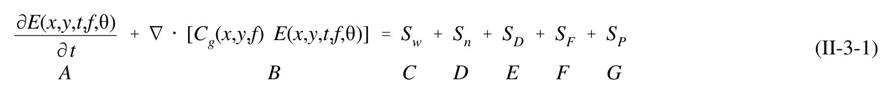 |
| 2 | II-3-2 | single_verified | $$C_A = \frac{g}{\omega} \tanh k h_A < \frac{g}{\omega} \tanh k h_B = C_B$$ | 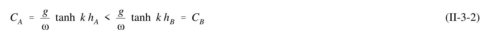 |
| 3 | II-3-3 | agreed | $$\Omega (x,y,t) = (k \cos\theta + k \sin\theta - \omega t)$$ | 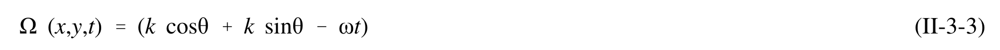 |
| 4 | II-3-4 | agreed | $$\vec{k} = \nabla \Omega$$ | 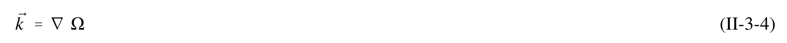 |
| 5 | II-3-5 | agreed | $$\nabla \times \vec{k} = 0$$ | 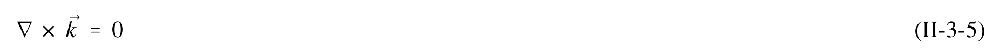 |
| 6 | II-3-6 | agreed | $$\frac{\partial (k \sin \theta)}{\partial x} - \frac{\partial (k \cos \theta)}{\partial y} = 0$$ | 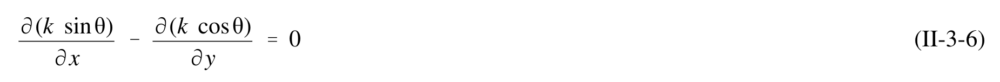 |
| 7 | II-3-7 | single_verified | $$\frac{d}{dx}\left(\frac{\sin\theta}{C}\right) = 0$$ | 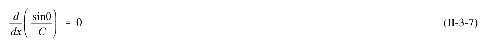 |
| 8 | II-3-8 | single_verified | $$\frac{\sin \theta}{C} = constant$$ | 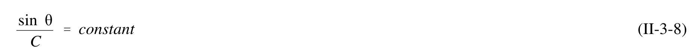 |
| 9 | II-3-9 | agreed_gt | $$\frac{\sin \theta}{C} = \frac{\sin \theta_0}{C_0}$$ | 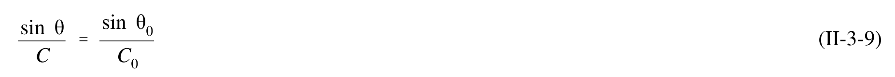 |
| 10 | II-3-10 | agreed_gt | $$(ECn)_0 b_0 = (ECn)_1 b_1$$ | 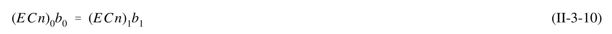 |
| 11 | II-3-11 | agreed_gt | $$E = \frac{1}{8} \rho g H^2$$ | 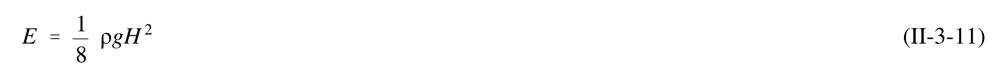 |
| 12 | II-3-12 | agreed | $$H_1 = H_0 \sqrt{\frac{C_{g_0}}{C_{g_1}}} \sqrt{\frac{b_0}{b_1}}$$ | 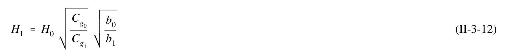 |
| 13 | II-3-13 | agreed_gt | $$H_1 = H_0 K_s K_r$$ | 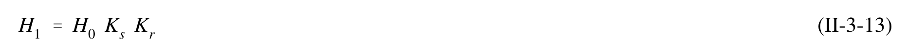 |
| 14 | II-3-14 | agreed_gt | $$K_{r} = \left(\frac{b_{o}}{b_{1}}\right)^{\frac{1}{2}} = \left(\frac{\cos \theta_{0}}{\cos \theta_{1}}\right)^{\frac{1}{2}} = \left(\frac{1 - \sin^{2} \theta_{0}}{1 - \sin^{2} \theta_{1}}\right)^{\frac{1}{4}}$$ | 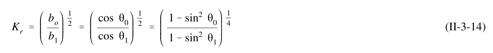 |
| 15 | II-3-15 | agreed | $$\frac{\partial \theta}{\partial s} = \frac{1}{k} \frac{\partial k}{\partial n} = -\frac{1}{C} \frac{\partial C}{\partial n}$$ | 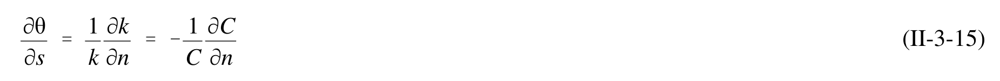 |
| 16 | II-3-16 | agreed_gt | $$\frac{ds}{dt} = C$$ | 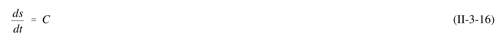 |
| 17 | II-3-17 | agreed_gt | $$\frac{dx}{dt} = C \cos \theta$$ | 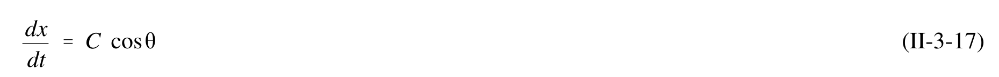 |
| 18 | II-3-18 | agreed_gt | $$\frac{dy}{dt} = C \sin\theta$$ | 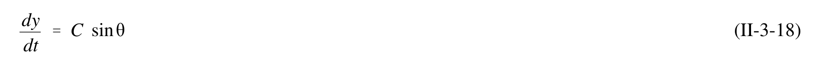 |
| 19 | II-3-19 | agreed_gt | $$K_r = \left(\frac{1}{\beta}\right)^{\frac{1}{2}}$$ | 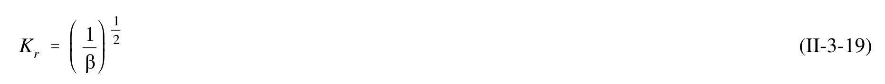 |
| 20 | II-3-20 | agreed_gt | $$\frac{d^2\beta}{ds^2} + p \frac{d\beta}{ds} + q\beta = 0$$ | 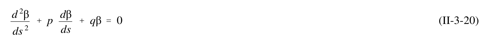 |
| 21 | II-3-21 | agreed | $$p(s) = -\frac{\cos\theta}{C} \frac{\partial C}{\partial x} - \frac{\sin\theta}{C} \frac{\partial C}{\partial y}$$ | 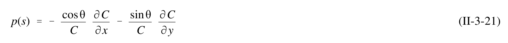 |
| 22 | II-3-22 | single_verified | $$L_0 = 1.56 \ T^2 = 1.56 \ (15)^2 = 351 \ m$$ | 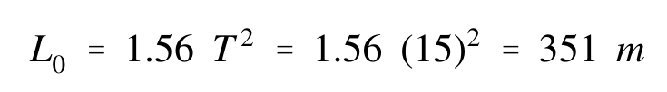 |
| 23 | II-3-23 | single_verified | $$L = \frac{g T^2}{2 \pi} \tanh \left( \frac{2 \pi d}{L} \right)$$ | 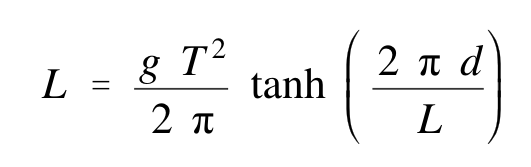 |
| 24 | II-3-24 | single_verified | $$K_s = \left( \frac{C_{g0}}{C_{gl}} \right)^{\frac{1}{2}}$$ | 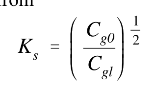 |
| 25 | II-3-25 | single_verified | $$\frac{1}{2} C_0 = \frac{1}{2} (1.56 \ T) = \frac{23.4}{2} = 11.7 \ \text{m/s}$$ | 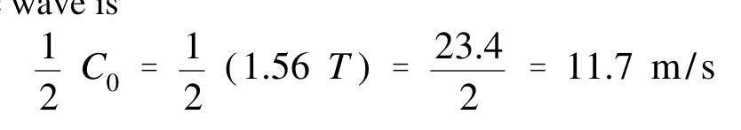 |
| 26 | II-3-26 | single_verified | $$C_g = nC = \frac{1}{2} \left( 1 + \frac{4\pi d/L}{\sinh(4\pi d/L)} \right) \frac{gT}{2\pi} \tanh\left(\frac{2\pi d}{L}\right)$$ | 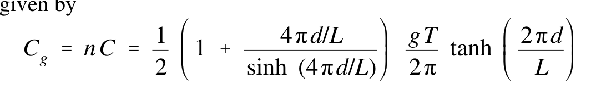 |
| 27 | II-3-27 | single_verified | $$K_s = \left(\frac{11.70}{9.05}\right)^{\frac{1}{2}} = 1.14$$ | 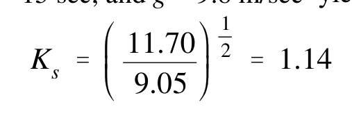 |
| 28 | II-3-28 | single_verified | $$K_r = \left(\frac{1 - \sin^2 \theta_0}{1 - \sin^2 \theta_1}\right)^{\frac{1}{4}}$$ | 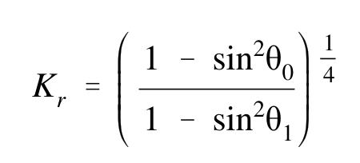 |
| 29 | II-3-29 | agreed_gt | $$\sin \theta = \frac{C_1 \sin \theta_0}{C_0}$$ | 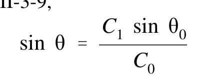 |
| 30 | II-3-30 | agreed_gt | $$\sin \theta = \frac{9.6 \sin (45^0)}{23.4} = \frac{9.6 (7.07)}{23.4} = 0.29$$ | 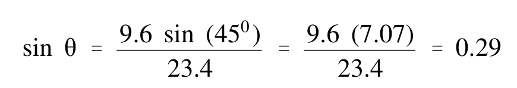 |
| 31 | II-3-31 | agreed_gt | $$K_r = \left(\frac{1 - \sin^2\theta_0}{1 - \sin^2\theta}\right)^{\frac{1}{4}} = \left(\frac{1 - (0.707)^2}{1 - (0.29)^2}\right)^{\frac{1}{4}} = \left(\frac{0.50}{0.91}\right)^{\frac{1}{4}} = 0.86$$ | 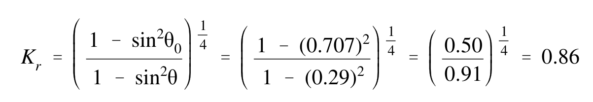 |
| 32 | II-3-22 | agreed | $$q(s) = \frac{\sin^2 \theta}{C} \frac{\partial^2 C}{\partial x^2} - 2 \frac{\sin \theta \cos \theta}{C} \frac{\partial^2 C}{\partial x \partial y} + \cos^2 \theta \frac{\partial^2 C}{\partial y^2}$$ | 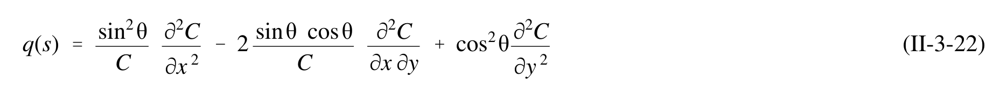 |
| 33 | II-3-23 | agreed | $$E(f,\theta) = \sum_{s} K_s^2(f,\theta) \quad K_r^2(f,\theta) \quad E_o(f,\theta) \quad \Delta f \Delta \theta$$ | 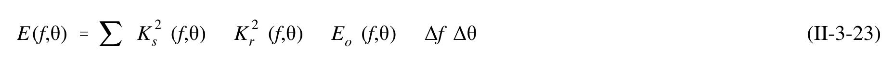 |
| 34 | II-3-24 | agreed | $$\nabla \left( CC_g \Phi \right) + \omega^2 \left( \frac{C_g}{C} \right) \Phi = 0$$ | 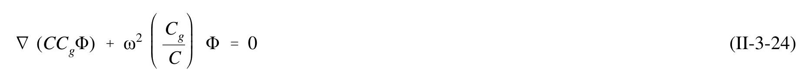 |
| 35 | II-3-25 | agreed_gt | $$\varphi(x,y,z) = \Phi \frac{\cosh k(h+z)}{\cosh kh}$$ | 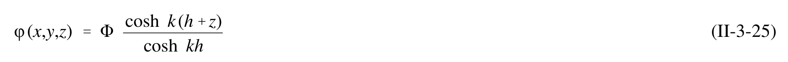 |
| 36 | II-3-26 | agreed | $$\nabla = \left(\frac{\partial}{\partial x_i}, \frac{\partial}{\partial y_j}\right)$$ | 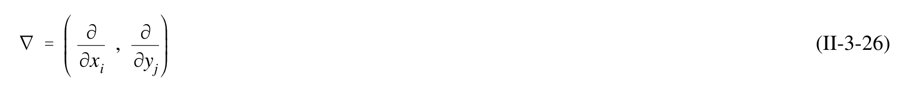 |
| 37 | II-3-27 | agreed | $$\frac{D^2 \varphi}{Dt^2} + \nabla \cdot U \frac{D \varphi}{Dt} - \nabla \cdot (C C_g \nabla \varphi) + (\sigma^2 - k^2 C C_g) \varphi = 0$$ | 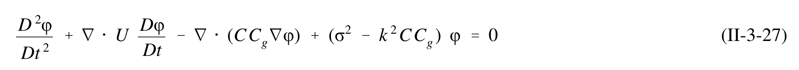 |
| 38 | II-3-28 | agreed | $$\frac{D}{Dt} = \frac{\partial}{\partial t} + U \cdot \nabla$$ | 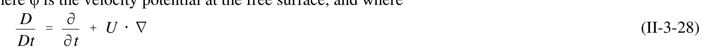 |
| 39 | II-3-29 | agreed | $$\nabla = \left(\frac{\partial}{\partial x} , \frac{\partial}{\partial y}\right)$$ | 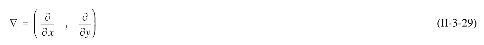 |
| 40 | II-3-30 | agreed_gt | $$U = (U(x,y), V(x,y)) = \text{ambient current vector}$$ | 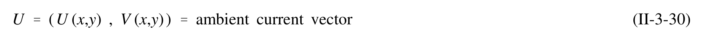 |
| 41 | II-3-31 | agreed_gt | $$\sigma = \omega - k \cdot U$$ | 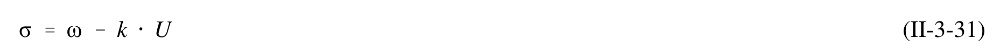 |
| 42 | II-3-32 | agreed_gt | $$C = \frac{\sigma}{k}$$ | 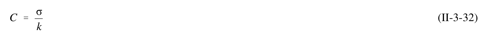 |
| 43 | II-3-33 | agreed | $$C_g = \frac{\partial \sigma}{\partial k}$$ | 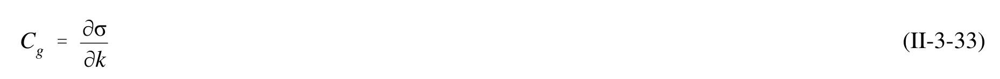 |
| 44 | II-3-34 | single_verified | $$\sigma^2 = gk \tanh(kh)$$ | 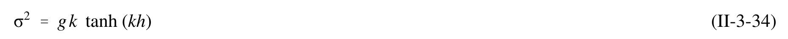 |